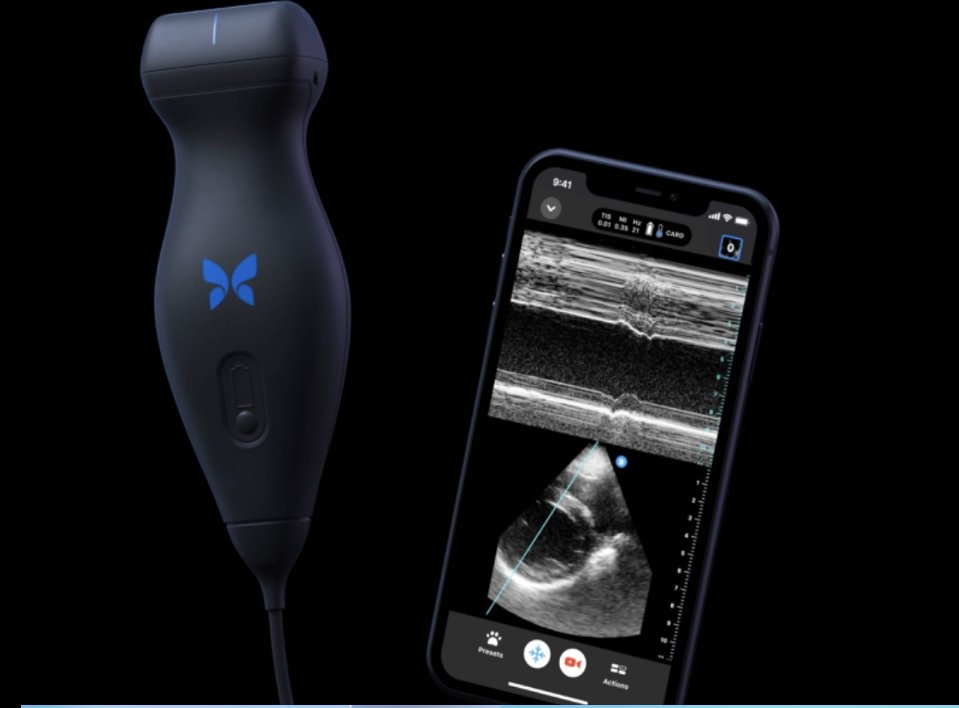

Butterfly iQ: Data Science in Point-of-Care Imaging
A market and technology analysis of the Butterfly iQ handheld ultrasound, built to explain a technical product, chip-based imaging, AI-assisted diagnostics, cloud telemedicine, to a non-technical audience without losing what makes it interesting.

Portable imaging can address some point-of-care constraints
Some clinical settings face equipment, transport, staffing, or connectivity constraints. Handheld ultrasound offers an alternative for selected point-of-care exams, while conventional systems and trained interpretation remain important.
One probe, whole-body imaging, FDA-cleared
Butterfly iQ is a portable point-of-care ultrasound (POCUS) device that connects to a smartphone or tablet. A single silicon chip-based probe replaces the multiple physical transducers a traditional ultrasound cart requires, and it's FDA-cleared for whole-body imaging in settings from emergency rooms to rural clinics.

The device pairs with a standard phone, no separate monitor or console required.
A full pipeline behind a handheld probe
The presentation maps a pipeline from signal acquisition and image reconstruction to AI-assisted measurements and cloud-enabled review. Availability and performance depend on the device, software version, exam, and operator; collecting more scans does not automatically update or improve a deployed model.
Hennepin EMS put it in 40 ambulances
A manufacturer-published Hennepin EMS case study reports operational adoption; it is not a controlled study of patient outcomes.
The manufacturer describes examples of field assessments that informed care decisions. The report does not establish a causal improvement in outcomes. Read the Hennepin EMS case study.
Why this matters beyond one device
Data-driven decisions at the point of care
Automated measurements and image guidance can support trained clinicians, with interpretation and escalation depending on the exam and clinical context.
Accessible and scalable by design
A handheld device can reduce some equipment and transport barriers. Affordability also depends on software, compatible hardware, training, and local resources.
Rapid response, measurable impact
Hennepin EMS reported changes in care decisions for 10% of cardiac and lung exams. This finding should not be generalized to all scans or interpreted as a measured improvement in patient outcomes.